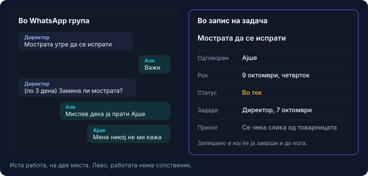
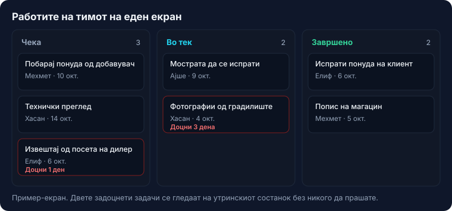

Зошто работите остануваат без следење? За што служи софтверот за управување со задачи
Во една фирма повеќето работи се даваат усно. Се кажуваат во ходник, се замолуваат по телефон, се пишуваат во WhatsApp група. Дел од зададените работи се завршуваат, дел се забораваат, а за дел по три дена се прашува „што стана со онаа работа?“. Овој текст објаснува зошто работите остануваат без следење и како софтверот за управување со задачи го решава тоа.

Каде се губи работата?
WhatsApp групата изгледа практична за давање задачи, затоа што сите се таму. Но во групата паѓаат сто пораки дневно. Пораката „да ја испратиме онаа мостра“ напишана наутро до пладне е далеку горе на екранот. Секој од тројцата што ја виделе мисли дека другиот се зафатил.
Кај работа дадена усно состојбата е уште понејасна. Тој што ја дал се сеќава дека кажал. Тој што ја примил не се сеќава до кога се барала или воопшто не чул. Настанува расправа во која и двајцата се во право, а додека се зборува кој што рекол, работата сè уште не е завршена.

Се случува и обратното: истата работа ја прават двајца. До клиентот одат две различни понуди, добавувачот го бараат двапати. Однадвор се добива слика на неуредна фирма.
Денот на раководителот поминува во проверување
Кога работите не се запишани никаде, следењето останува на меморијата на раководителот. Наутро прво ги прашува сите еден по еден: замина ли понудата, однесено ли е возилото на технички преглед, стигнаа ли фотографиите од градилиштето? Така поминува добар дел од денот.
Овој начин има уште една последица. Кога раководителот ќе заборави да праша, се заборава и работата. Тимот со време учи дека работата за која никој не прашува не е итна.
Истата празнина се појавува и кога некој ќе ја напушти фирмата или ќе замине на годишен одмор. Кои работи се кај него се знае само во неговиот телефон и во неговата глава. Тој што го заменува почнува од нула, а ветувањата дадени на клиентите се губат попат.
Што менува софтверот за управување со задачи?
Тоа што го прави е едноставно: секоја работа ја претвора во запис. Во записот има четири работи: што е работата, кој ќе ја заврши, до кога и во каква состојба е сега. Кога овие четири податоци се запишани, повеќето од горните проблеми исчезнуваат сами.
Тој што ја добил работата го гледа својот список на телефон. Јасно е што треба да заврши денес и што доцни. Кога ќе заврши, ја означува и по потреба додава фотографија или документ.
Тој што ја дал работата не мора да прашува. Го отвора екранот и гледа кај кого што има, што е завршено, што доцни. Утринскиот состанок се скратува, се зборува само за работите што запнале.

Тука влегуваат и работите што се повторуваат. Месечен попис, неделна посета на дилер, технички преглед на возило, обнова на договор — се дефинираат еднаш и кога ќе дојде денот сами се појавуваат во списокот на одговорниот. Никој повеќе не мора да ги памети.
За тимови што работат на терен
Кај сервис, монтажа или теренска продажба тимот поголемиот дел од денот е надвор. За да дознаете колку од работите поделени усно наутро се завршени до вечер, чекате сите да се вратат.
Кога задачите одат на телефон, теренскиот тим ги носи со себе следната работа, адресата и белешката за клиентот. По завршувањето прави фотографија и по потреба зема потпис од клиентот. Канцеларијата го гледа тоа во истиот момент. Кога клиентот ќе се јави, можете да кажете „нашиот тим замина пред половина час, работата е завршена“.
Дали тимот ќе го сфати ова како контрола?
Првата реакција најчесто е таква и треба да се сфати сериозно. Ако системот го користите само за да видите кој доцни, тимот брзо ќе најде начин само да означи и да продолжи.
Пристапот што успева е системот прво да му ја олесни работата на вработениот. Да ги гледа своите работи во еден список, да се ослободи од расправата „мене никој не ми кажа“, уредно да ги предаде работите кога оди на одмор — тоа е олеснување и за него. При воведувањето, во првата недела целиме само кон тоа. Извештаите и следењето на доцнењата доаѓаат потоа.
Како да се почне?
Почнете со еден тим и едно правило: работата се смета за дадена ако е запишана во системот. И работата кажана усно или напишана во групата потоа се внесува во системот. Ако ова правило се одржи две недели, останатото е лесно.
На почеток не се занимавајте со детали како категории, приоритети и ознаки. Доволни се работа, човек и датум. Како што тимот се навикнува, ги додавате полињата што ви требаат.
Изборот на алатки е голем. Има лесни апликации што следат само задачи, а има и системи што работат заедно со записите на клиенти и понуди. Ако задачите ви се врзани за клиент, нарачка или проект, треба да го гледате вториот вид (види Што е управување со задачи во CRM?). Во спротивно, истата информација ја пишувате на две места.
Често поставувани прашања
Мора ли целосно да се откажеме од WhatsApp?
Не. Можете и понатаму да го користите за допишување. Се менува само едно: самата работа не останува во порака, туку се запишува.
Не е ли премногу за фирма од десет луѓе?
Десет луѓе значат триесет-четириесет одделни работи дневно. Еден човек и онака не може сите да ги држи во глава. За оваа големина едноставна алатка е сосема доволна.
Што ако тимот не го користи?
Ако раководителот не го користи, нема да го користи ни тимот. Кога работите се даваат преку системот и статусот се следи во системот, навиката се создава за неколку недели.
Поврзани услуги: апликација за управување со задачи и теренски тимови, консалтинг за дигитална трансформација.
Шаблон за следење задачи
Кој, која работа, до кога; задоцнетата работа е црвена, преглед по лице. Бесплатен Excel шаблон.
Погледни ги шаблонитеДа ги направиме видливи работите на вашиот тим
Да видиме заедно како денес се даваат и се следат работите.
Да разговараме за вашиот проект